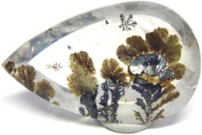

Каталог минералов
Самоцветы
Основания стены города (Небесного Иерусалима) украшены драгоценными камнями.
- Основание первое — яспис,
- второе — сапфир,
- третье — халцедон,
- четвертое — смарагд,
- пятое — сардоникс,
- шестое — сердолик,
- седьмое — хризолит,
- восьмое — берилл
- девятое — топаз,
- десятое — хризопраз,
- одиннадцатое — гиацинт,
- двенадцатое — аметист.
Откровение Св. Иоанна. Глава XXI. Стих 19, 20
Халцедон и его виды
Халцедон — полупрозрачный минерал, тонковолокнистая разновидность кварца. халцедон состоит из тончайших волокон, ориентированных перпендикулярно поверхности выделений;
макроскопически он представлен гроздьевидными, почковидными или сталактитоподобными выделениями, в разрезе - радиально-лучистыми.
Агат

Агат
Сердолик
Сердолик
Хризопраз
Хризопраз
Кварц и его виды
Кварц - минерал, оксид кремния. Является одним из самых распространенных минералов в земной коре и одним из самых важных породообразующих минералов.
Цитрин
Цитрин
Аметист
Аметист
Рутиловый кварц
Рутиловый кварц
Полевой шпат и его виды
Полевые шпаты относятся к силикатам с кристаллической структурой каркасного типа, это ажурные постройки из кремнекислородных тетраэдров, в которых кремний иногда замещён алюминием.
Они образуют довольно однообразные кристаллы моноклинной или триклинной сингоний, в виде немногочисленных комбинаций ромбических призм и пинакоидов.
Адуляр
Адуляр
Лабрадор
Лабрадор
Ортоклаз
Ортоклаз
2017 @ ГРАНИ САМОЦВЕТОВ